在这一章中，我们将涵盖最流行、应用最广泛的深度神经网络之一——卷积神经网络 ( CNN ，也称为 ConvNet )。
正是这类神经网络在很大程度上促成了计算机视觉在过去几年中取得的令人难以置信的成就，从Alex Krizhevsky、Geoffrey Hinton和Ilya Sutskever创建的AlexNet开始，它在2012年 ImageNet大规模视觉识别挑战赛 ( ILSVRC )中胜过了所有其他模型，从而开始了深度学习革命。
ConvNets是一种用于处理数据的非常强大的神经网络。它们具有类似网格的拓扑结构(即相邻点之间存在空间相关性)，在各种应用中非常有用，如面部识别、自动驾驶汽车、监控、自然语言处理、时间序列预测等。
我们将从介绍ConvNets的基本构建模块开始，并介绍一些实践中使用的架构，如AlexNet、VGGNet和Inception-v1，以及探索是什么使它们如此强大。
本章将涵盖以下主题:
- ConvNets背后的灵感
- ConvNets中使用的数据类型
- 卷积和汇集
- 使用ConvNet架构
- 培训和优化
- 探索流行的ConvNet架构
CNN是一种人工神经网络(ANN)；它们大致受到人类视觉皮层处理图像并允许我们的大脑识别世界上的物体并与之互动的概念的启发，这允许我们做许多事情，如开车、运动、阅读、看电影等。
人们已经发现，在我们的大脑中进行着有点类似于卷积的计算。此外，我们的大脑拥有简单和复杂的细胞。简单细胞提取基本特征，如边缘和曲线，而复杂细胞显示空间不变性，同时也响应与简单细胞相同的线索。
CNN在视觉任务上工作得非常好，例如图像和视频中的对象分类和对象识别，以及音乐、声音剪辑等中的模式识别。他们在这些领域工作得很有效，因为他们能够利用数据的结构来了解它。这意味着我们不能改变数据的属性。例如，图像有固定的结构，如果我们改变它，图像将不再有意义。这不同于人工神经网络，在人工神经网络中，特征向量的排序无关紧要。因此，CNN的数据存储在多维数组中。
在计算机中，图像是灰度(黑白)或彩色(RGB)，视频(RGB-D)由up像素组成。像素是可以在计算机上显示的数字化图像的最小单位，并且以[0，255]的形式保存值。像素值代表其强度。
如果像素值是0，那么就是黑色，如果是128，那么就是灰色，如果是255，那么就是白色。我们可以在下面的截图中看到这一点:
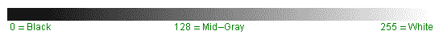
正如我们所看到的，灰度图像只需要1个字节的数据，而彩色图像则由三种不同的值组成，即红色、蓝色和绿色，因为任何颜色都可以通过这三种颜色的组合来显示。我们可以在下图中看到色彩空间(参考图形包中的色彩图):
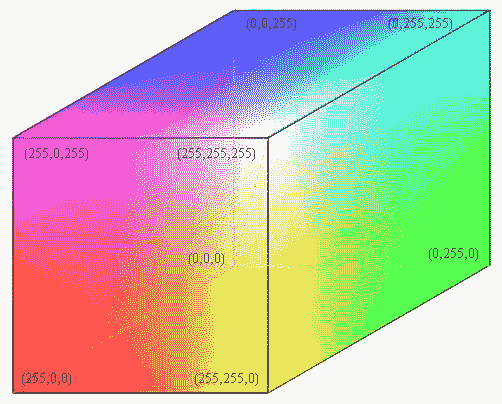
根据我们在立方体中的位置，我们显然会得到不同的颜色。
我们可以把它看成有三个独立的通道——红色、蓝色和绿色，而不是把它看成一个立方体或不同的颜色强度。然后，每个像素需要3字节的存储空间。
通常情况下，我们无法看到我们在显示器上看到的图像和视频中的单个像素，因为它们的分辨率非常高。这可能变化很大，但像素通常在每英寸几百到几千个点(像素)(dpi)之间。
一位(二进制单位)是计算机的基本单位，每一位可以取两个值中的一个——0或1。一个字节由8位组成。如果您想知道，[0，255]的范围来自以8位存储的像素值，(28–1 = 255)。然而，我们也可以有一个16位的数据值。在彩色图像中，我们可以有8位、16位、24位或30位值，但我们通常使用24位值，因为我们有三个彩色像素RGB，每个像素都有一个8位数据值。
假设我们有一个尺寸为512 × 512 × 1(高×宽×通道)的灰度图像。我们可以将其存储在一个二维张量(矩阵)， 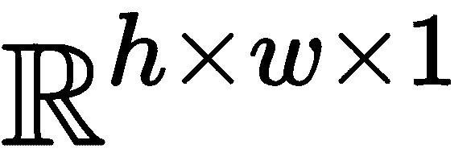 中，其中每个 i 和 j 值都是一个具有某种强度的像素。要在我们的磁盘上存储这个图像，我们需要512 × 512 = 262，144字节。
现在，假设我们有一个512 × 512 × 3(高×宽×通道)大小的彩色图像。我们可以将其存储在一个三维张量中，  ，其中每个 i，j，和 k 值都是一个具有某种强度的彩色像素。为了在我们的磁盘上存储这个图像，我们需要512 × 512 × 3 = 786，432字节，这告诉我们存储一个彩色图像需要更多的空间，因此需要更长的处理时间。
，其中每个 i，j，和 k 值都是一个具有某种强度的彩色像素。为了在我们的磁盘上存储这个图像，我们需要512 × 512 × 3 = 786，432字节，这告诉我们存储一个彩色图像需要更多的空间，因此需要更长的处理时间。
彩色视频可以表示为一系列帧(图像)。我们从离散时间开始，这样每一帧与另一帧相隔一个固定的时间步长。我们可以将一个常规视频(灰度)存储在一个三维数组中，其中一个轴代表帧的高度，另一个轴代表宽度，第三个轴代表时间的长度。
我们将在本章的后面了解到，CNN对于音频和时间序列数据也非常有效，因为它们可以抵抗噪声。我们将时间序列数据表示为一维数组，其中数组的长度是时间，这是我们卷积的内容。
在第7章、前馈神经网络中，我们看到了神经网络是如何建立的，以及权重是如何将一层中的神经元连接到上一层或下一层中的神经元的。然而，CNN中的各层通过一种称为卷积的线性运算连接起来，这就是它们的名字的来源，也是它成为如此强大的图像架构的原因。
在这里，我们将回顾实践中使用的各种卷积和池操作，以及每种操作的效果。但首先，让我们看看卷积到底是什么。
在数学中，我们写卷积如下:
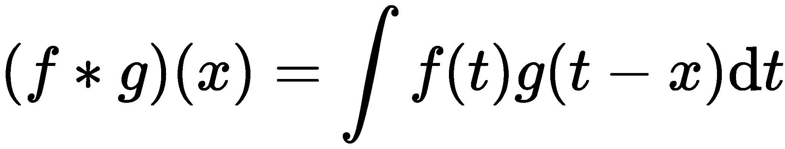
这意味着我们有一个函数， f ，它是我们的输入，还有一个函数， g ，它是我们的内核。通过卷积它们，我们得到一个输出(有时称为特征图)。
然而，在CNN中，我们通常使用离散卷积，其写法如下:
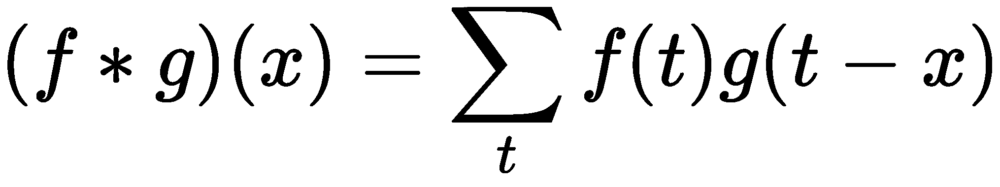
假设我们有一个高5宽5的二维数组，一个高3宽3的二维内核。然后，卷积及其输出将如下所示:
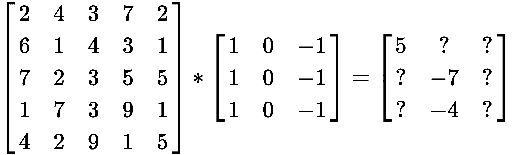
输出矩阵中的一些值保留为空，作为我们手动尝试卷积的练习，以便更好地了解该操作的工作原理。
如您所见，内核滑过输入，产生一个高度为3、宽度为3的特征图。这个特征图告诉我们函数 f 和 g 在一个越过另一个时重叠的程度。我们可以认为这是扫描输入的某种模式；换句话说，特征图在输入的不同地方寻找相同的模式。
为了更好地理解内核如何在输入上移动，想象一下打字机。卷积从左上角开始，应用逐元素的乘法和加法，然后向右移动一步并重复，直到到达最右边的位置，而不超出输入的边界。然后向下移动一行，重复这个过程，直到到达右下角的位置。
假设我们现在有一个3 × 3的二维张量作为输入，并对它应用一个2 × 2的核。它将如下所示:

我们可以用数学方法将特征图中的各个输出表示如下:

现在，我们可以将前面的离散卷积方程改写如下:
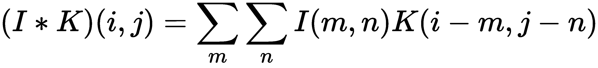
这让我们对正在发生的事情有了更清晰的认识。
从前面的操作中，我们可以看出，如果我们继续对特征图应用卷积，那么每一层的高度和宽度都会随之减小。因此，有时，我们可能希望在卷积运算后保留 I 的大小(特别是如果我们正在构建一个非常深的CNN)，在这种情况下，我们用零填充矩阵的外部。这样做是为了在应用卷积运算之前增加矩阵的大小。
因此，如果 I 是一个n × n数组，我们的内核是一个k × k数组，我们希望我们的特征映射也是n × n，那么我们填充 I 一次，把它变成一个(n+2) × (n+2)数组。现在，在我们对两者进行卷积之后，得到的特征图将具有n × n的大小。
填充操作如下所示:
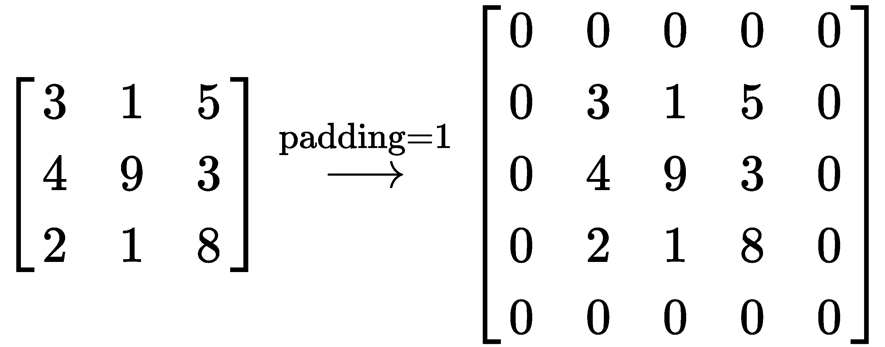
实际上，这被称为完全填充。当我们不填充时，我们称之为零填充。
如果我们想要减小特征图的大小，我们可以使用更大的内核或者增加步长——每种方法都会产生不同的结果。当步幅为1时，我们像平常一样滑动内核，一次一个。然而，当我们将步幅增加到2时，内核每次跳两个位置。
让我们使用之前卷积的矩阵，看看将步幅改为2:
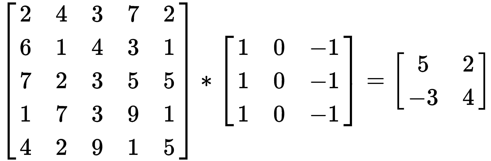
有了这些知识，我们可以使用以下公式计算特征图的最终形状:
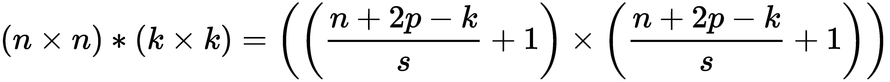
这里， I 是n × n数组， K 是k × k数组， p 是填充， s 是步距。
此外，我们可以使用不同的内核并生成多个特征图，尽可能多次重复这个过程。然后，我们将这些输出叠加在一起，形成一个三维阵列的特征地图，我们称之为层。
例如，假设我们有一个大小为52 × 52的图像和一个大小为12 × 12、步幅为2的内核。我们将此应用于我们的输入15次，并将输出堆叠在一起。我们得到一个大小为 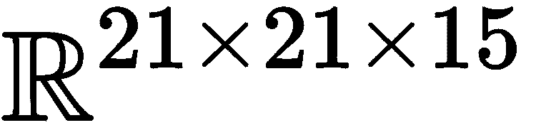 的三维张量。
当我们为现实世界的应用程序构建CNN时，我们更有可能想要处理彩色图像。我们之前看到灰度图像可以表示为二维张量(矩阵),因此卷积也是二维的。然而，正如我们所知，彩色图像是由三个通道叠加而成的——红色、蓝色和绿色。然后，图像具有 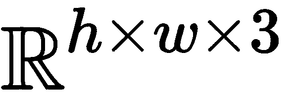 形状，因此相关联的卷积也将具有相同的形状。但有趣的是，将彩色图像与三维卷积进行卷积会给我们带来二维特征图。
在前面的例子中，我们讨论了如何对二维张量执行卷积，但是彩色图像有三个通道。因此，我们要做的是将三个通道分开，分别进行卷积，然后使用元素加法将它们各自的输出相加，产生一个二维张量。为了更好地理解这一点，我们假设有一个大小为3 × 3 × 3的输入，我们可以将其分为三个通道，如下所示:
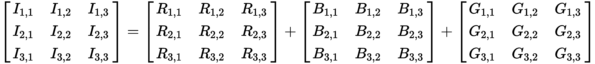
这就告诉我们， I i，j = R i，j + B i，j + G i，j 。现在我们已经分离了通道，让我们用2 × 2内核对它们进行卷积。将每个通道与我们的内核卷积后，我们得到以下输出:
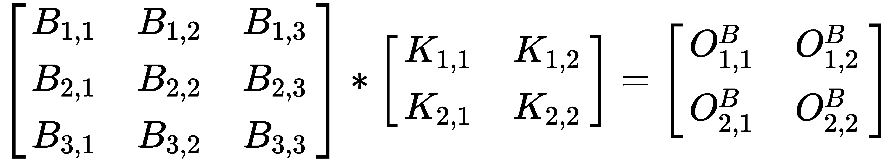
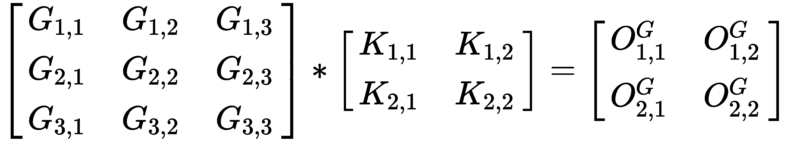
如果我们想更深入，我们可以用数学方法写出输出的每个元素是如何计算出来的。这看起来如下:

我们可以认为这是对输入应用三维卷积。这里需要注意的是，内核的深度与图像的深度相同，因此它会像二维卷积运算一样移动。
我们不是对每个通道分别应用一个内核，而是一次对输入应用一个三维内核，并使用元素级乘法和加法。我们这样做是因为这允许我们对体积数据进行卷积。
这里，我们将15个大小为12 × 12、步长为2的内核应用于大小为52 × 52的输入，得到的输出大小为21 × 21 × 15。现在，我们可以对这个输出应用一个8 × 8 × 15大小的卷积。因此，该操作的输出大小为14 × 14。当然，和以前一样，我们可以将多个输出堆叠在一起，形成一个层。
既然我们知道了卷积在二维中是如何工作的，现在是我们来看看它们在一维中是如何工作的时候了。我们将这些用于时间序列数据，例如与股票价格或音频数据相关的数据。在前面的部分中，内核沿着轴从左上角移动到右上角，然后删除一行或多行(取决于步幅)。重复这个过程，直到它到达网格的右下角。
这里，我们只沿时间轴进行卷积，即时间维度(从左到右)。但是，填充和步幅的效果在这里仍然适用。
假设我们有以下数据:
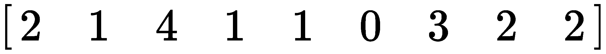
我们也有下面的大小为1 × 3的内核，我们希望应用于它:
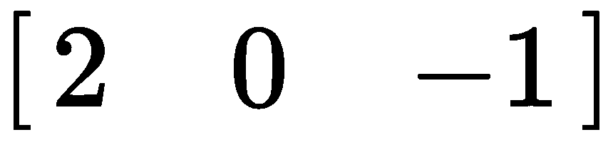
然后，在步长为2的卷积之后，我们得到以下输出:
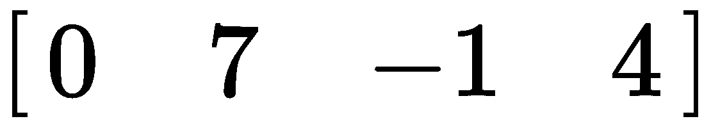
有趣的是，我们也可以将一维卷积应用于矩阵(图像)。让我们看看这是如何工作的。假设我们有一个4 × 4的输入矩阵和一个4 × 1的内核。然后，卷积将按如下方式进行:
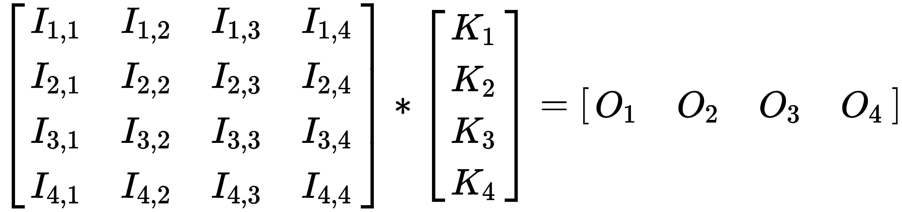
让我们看一下幕后，看看每个输出是如何计算的:
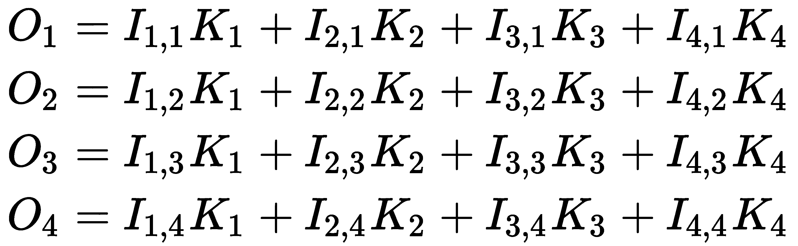
然而，我们的内核大小也可以更大，就像早期的二维卷积一样。
在上一节中，我们介绍了体积数据的二维卷积，这些卷积是按深度执行的(每个卷积的深度与输入的深度相同)。这基本上等同于将通道深度上的值与内核的值相乘，然后将它们相加得到单个值。
如果我们采用与先前相同的形状为21 × 21 × 15的输入，并应用我们的形状为1 × 1 × 15的1 × 1内核，我们的输出将具有形状21。如果我们应用这个操作12次，那么我们的输出将是21 × 21 × 12。我们使用这些形状，因为它们可以减少我们的数据的维度，因为应用更大尺寸的核在计算上更昂贵。
既然我们已经对二维卷积的工作原理有了很好的了解，是时候转向三维卷积了。但是等等——我们不是刚学了三维卷积吗？有点，但不完全是因为，如果你还记得，它们与我们正在卷积的体积具有相同的深度，并且与二维卷积一样移动——沿着图像的高度和宽度。
三维卷积的工作方式有点不同，因为它们在深度以及高度和宽度上进行卷积。这告诉我们，内核的深度小于我们想要卷积的体积的深度，并且在每一步，它执行元素级的乘法和加法，产生单个标量值。
如果我们有大小为21 × 21 × 15的体数据(如前一节所述)和大小为5 × 5 × 5的三维内核，步长为1，则输出大小为16 × 16 × 11。
从视觉上看，如下所示:
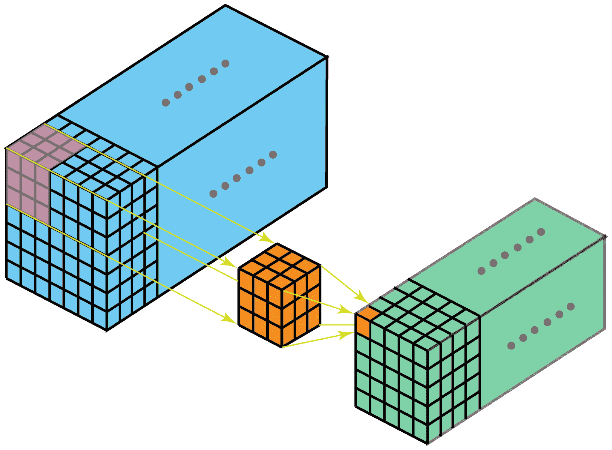
我们可以用与前面二维情况类似的方法计算三维卷积的输出形状。
这种卷积经常用于需要我们在3D中寻找关系的任务中。这尤其用于三维对象分割和检测视频中的动作/运动的任务中。
可分卷积是一种非常有趣的卷积。它们处理二维输入，可以在空间或深度方向上应用。其工作方式是，我们将k × k大小的内核分解为两个更小的内核，大小分别为k × 1和1 × k。我们不是应用k × k内核，而是首先应用k × 1内核，然后对其输出应用1 × k内核。使用它的原因是它减少了网络中的参数数量。对于原始内核，我们必须在每一步执行k 2 次乘法，但对于可分离卷积，我们只需执行2000次乘法，这要少得多。
假设我们有一个3 × 3内核，希望应用于6 × 6输入，如下所示:
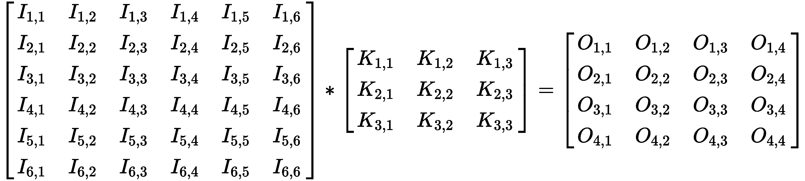
在前面的卷积中，我们的内核必须在16个位置中的每一个位置执行9次乘法运算，才能生成我们的输出。这总共是144次乘法。
让我们看看可分卷积有何不同，并比较其结果。我们首先将内核分解成k × 1和1 × k个内核:
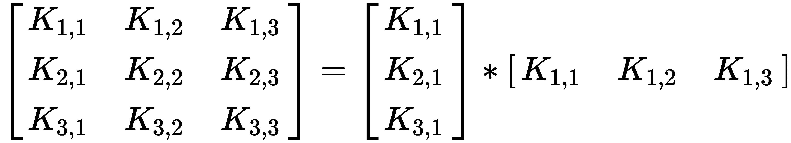
我们将分两步将内核应用到我们的输入中。这看起来如下:
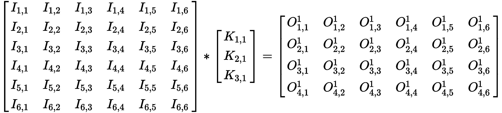
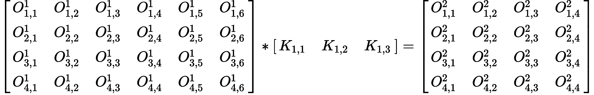
这里， 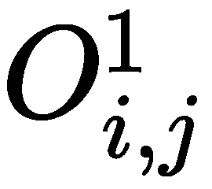 是第一次卷积运算的输出， 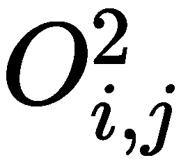 是第二次卷积运算的输出。然而，正如您所看到的，我们仍然得到了与以前相同大小的输出，但是必须执行的乘法次数更少了。第一个卷积必须在24个位置的每一个位置执行三次乘法，总共72次乘法，第二个卷积也在16个位置的每一个位置执行三次乘法，总共48次乘法。通过合计两个卷积的总乘法次数，我们发现它们总共执行了120次乘法，少于k × k内核必须执行的144次乘法。
重要的是澄清不是每个内核都是可分的。例如，让我们看看Sobel滤波器及其分解:
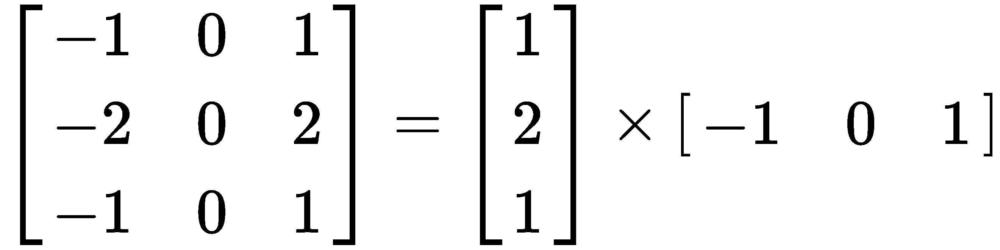
我们刚刚学的是空间可分卷积。利用我们目前所学的知识，你认为深度方向卷积将如何工作？
你应该记得，当我们进行二维卷积时，我们为彩色图像引入了三维内核，其中深度与图像相同。因此，如果我们有一个8 × 8 × 3的输入和一个3 × 3 × 3大小的内核，我们将得到6 × 6 × 1的输出。然而，在深度方向可分离卷积中，我们将3 × 3 × 3核分成三个大小为3 × 3 × 1的核，这三个核对其中一个通道进行卷积。在将我们的核应用到我们的输入之后，我们有一个大小为6 × 6 × 3的输出，对于这个输出，我们将应用一个大小为1 × 1 × 3的核，它产生6 × 6 × 1的输出。
如果我们想将输出深度增加到72，而不是应用72个3 × 3 × 3内核，我们将应用72个1 × 1 × 3卷积。
让我们比较两者，看看哪一个计算效率更高。使用3 × 3 × 3内核计算6 × 6 × 72输出所需的乘法次数是(3×3×3) × (6×6) × 72 = 69，984，这是一个很大的数目！要使用深度方向可分离卷积计算相同的输出，所需的乘法次数为(3×3×1)×3×(6×6)+(1×1×3)×(6×6)×72 = 8，748，这要少得多，因此效率也高得多。
我们知道对图像重复应用卷积会减小图像的大小，但是如果我们想反过来做呢？也就是说，从输出的形状到输入的形状，同时仍然保持局部连通性。为了做到这一点，我们使用转置卷积，它的名字来源于矩阵转置(这个你应该记得从 第一章，向量微积分)。
假设我们有一个4 × 4的输入和一个3 × 3的内核。然后，我们可以将内核重写为一个4 × 16的矩阵，我们可以用它进行矩阵乘法来执行卷积。这看起来如下:
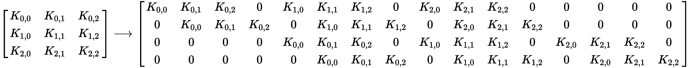
如果仔细观察，您会注意到每一行都代表一个卷积运算。
为了使用这个矩阵，我们将输入重写为16 × 1列向量，如下所示:
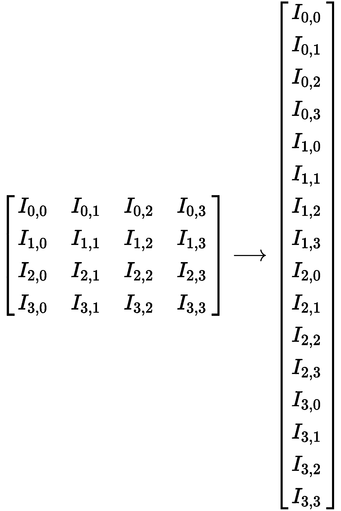
然后，我们可以将卷积矩阵和列向量相乘，得到一个4 × 1的列向量，如下所示:
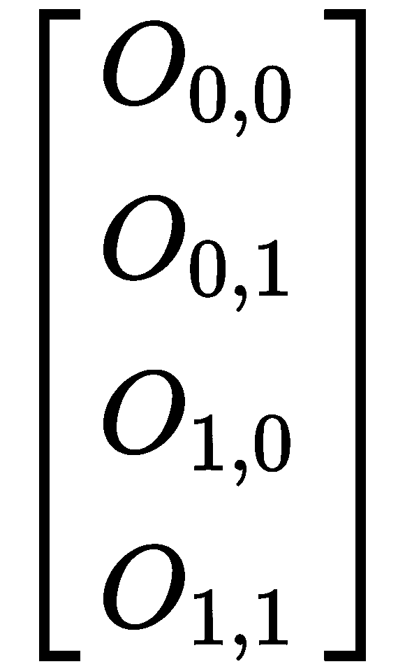
我们可以用下面的形式重写它:
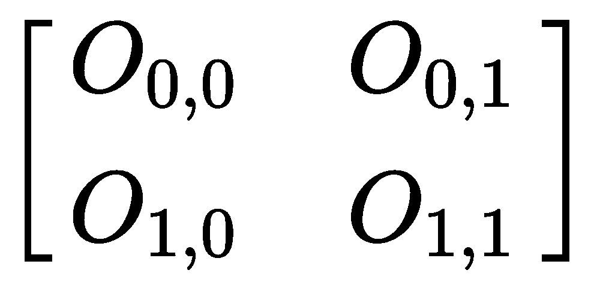
这与我们在上一节中看到的相同。
你现在可能想知道这和转置卷积有什么关系。很简单——我们使用与之前相同的概念，但现在我们使用卷积矩阵的转置，从输出到输入反向工作。
让我们将前面的卷积矩阵转置，使其成为大小为16 × 4的矩阵:

这一次，我们相乘的输入向量将是一个4 × 1列向量:
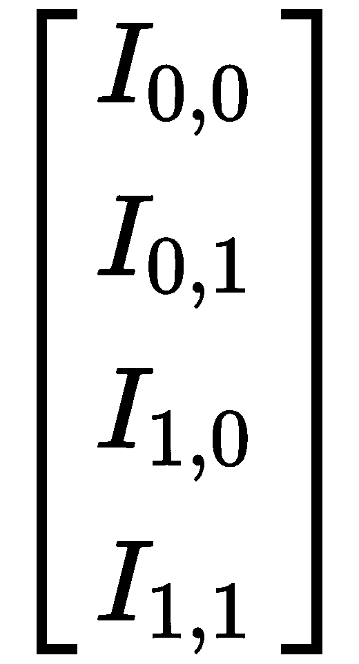
我们可以将它们相乘，得到16 × 1的输出向量，如下所示:
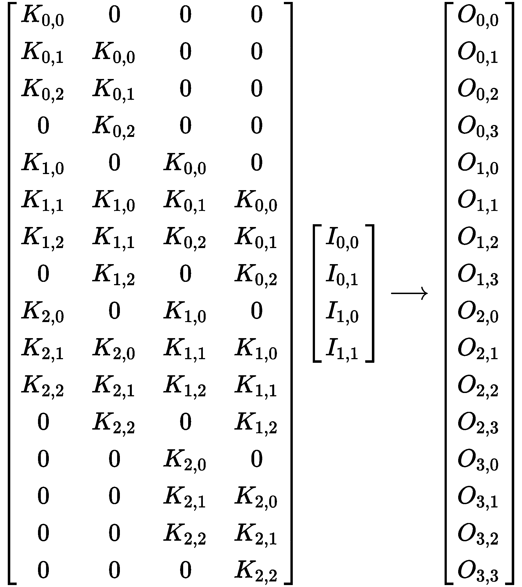
我们可以将输出向量重写为4 × 4矩阵，如下所示:
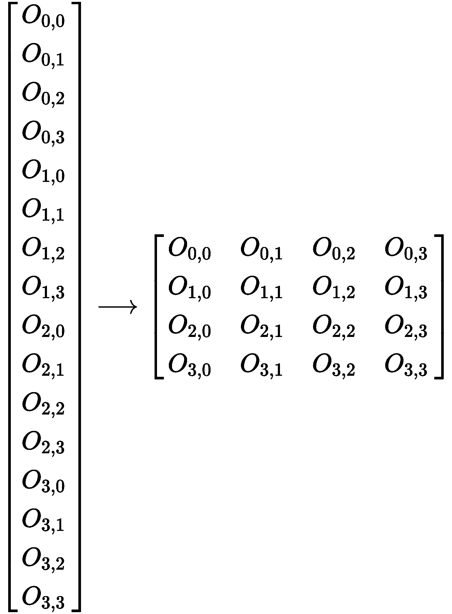
就这样，我们可以从低维空间到高维空间。
值得注意的是，应用于卷积运算的填充和跨距也可以用于转置卷积。
然后，我们可以使用以下公式计算输出的大小:
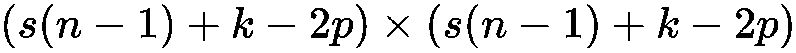。
这里输入为n × n，内核为k × k， p 为池化， s 为步距。
CNN中另一个常用的操作被称为池 ( 子采样或下采样)。这有点像卷积运算，只是它通过在特征图上滑动一个窗口来减小特征图的大小，并在每个步骤对每个窗口内的所有值进行平均，或者输出最大值。汇集运算不同于卷积运算，因为它没有任何参数，因此无法学习或调整。我们可以计算合并后的特征地图的大小，如下所示:
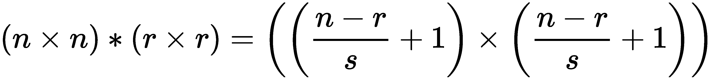
这里， I 是一个n × n形二维张量，pooling运算是一个r × r形二维张量， s 是步距。
下面是一个最大池化的示例，步长为1:
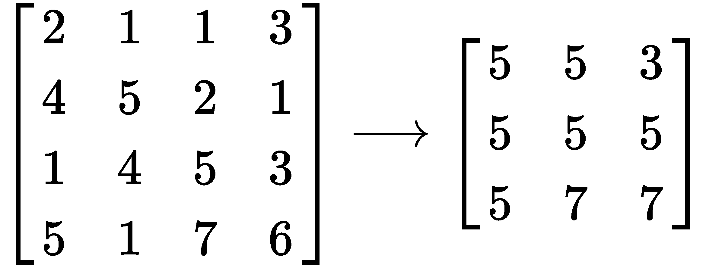
下面是一个步长为2的平均池示例:
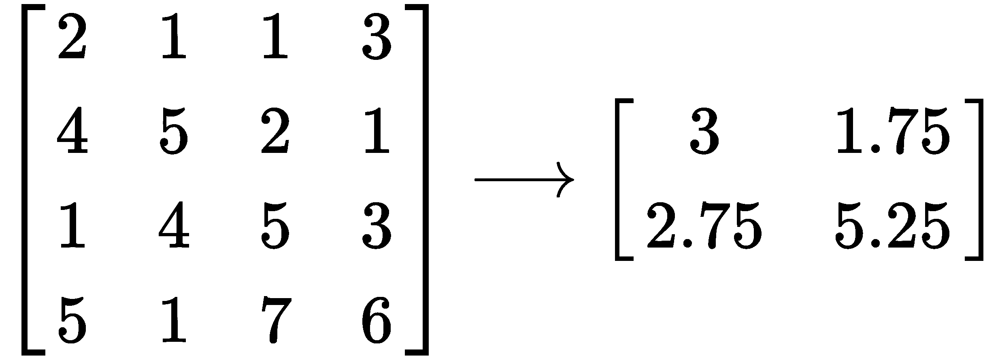
根据经验，已经发现最大池操作的性能更好。
由此，您可能会注意到输出与原始输出有很大不同，并且没有完全表示所有信息。事实上，很多信息已经丢失。正因为如此，汇集操作在实践中使用得越来越少。
全局平均池化是我们之前看到的池化操作的变体，其中我们不是在特征图上滑动子采样内核，而是取整个特征图的平均值并输出单个实数值。假设我们有一张大小为6 × 6 × 72的特征图。在应用这个池操作之后，我们的输出大小将是1 × 1 × 72。
这通常用于最后一层，通常我们会应用子采样，并将输出馈入完全连接的层；相反，这允许我们跳过完全连接的层，并将全局平均池的输出直接输入到我们的softmax中进行预测。
使用这种方法的优点是，它大大减少了我们必须在网络中训练的参数数量。如果我们展平前面的特征图，并将其放入500个节点的层中，它将有129.6万个参数。这还有一个额外的好处，即减少对训练数据的过度拟合，并改善我们的分类预测，因为输出更接近于类。
既然我们已经知道了卷积和池的各种类型，现在是时候来谈谈与它们相关的一个非常重要的话题了——它们的大小。如您所见，当我们对图像应用卷积时，输出比输入小。输出大小由内核的大小、步幅以及是否有填充决定。在设计CNN时，这些都是需要记住的非常重要的事情。
实践中使用的卷积有几种尺寸，最常用的是7 × 7、5 × 5和3 × 3。然而，我们也可以使用其他尺寸，包括但不限于11 × 11、13 × 13、9 × 9、17 × 17等等。
在实践中，我们通常使用较大步幅的较大卷积来生成较小尺寸的特征图，以减少计算约束，并默认最多使用3 × 3和5 × 5核。这是因为它们在计算上更可行。一般来说，拥有更大的内核将允许我们查看图像中更大的空间并捕捉更多的关系，但拥有多个3 × 3内核已被证明具有类似的性能，同时计算量更少，这是我们更喜欢的。
既然我们知道了构成一个通讯网络的所有不同组件，我们可以把它们放在一起，看看如何构建一个深度CNN。在本节中，我们将构建一个完整的体系结构，并观察前向传播是如何工作的，以及我们如何决定网络的深度、要应用的内核数量、何时以及为何使用池，等等。但是在我们深入研究之前，让我们探索一下CNN与FNN的一些不同之处。它们如下:
- CNN中的神经元具有局部连通性，这意味着连续层中的每个神经元都从一个图像的一小组局部像素接收输入，而不是接收整个图像，就像前馈神经网络()一样。
- CNN层中的每个神经元具有相同的权重参数。
- CNN中的层可以归一化。
- CNN是平移不变的，这允许我们检测相同的对象，而不管它在图像中的位置。
- CNN的参数更少，因为卷积运算会对周围的神经元进行加权，并将其求和到下一层的神经元中，从而平滑图像。
- CNN中通常使用的激活函数是ReLU、PReLU和eLU。
CNN架构与我们在本书前面看到的FNN架构并非完全不同，只是我们没有完全连接的图层，而是使用卷积图层从输入和之前的图层中提取空间关系，并从每个图层的输入中学习要素。
一般来说，架构学习的内容可以用下面的流程来演示:
正如您在前面的流程中所看到的，在后面的层中，功能变得越来越复杂。这意味着最早的层(最接近输入层的层)学习非常基本的特征，如边缘和线条、纹理或某些颜色如何区分。后一层将前一层的特征地图作为输入，并从中学习更复杂的模式。例如，如果我们创建一个面部识别模型，最早的层将学习最简单的直线、曲线和渐变。下一层将从上一层获取特征地图，并使用它来学习更复杂的特征，如头发和眉毛。在那之后的一层将学习更复杂的特征，比如眼睛、鼻子、耳朵等等。
我们可以在下图中看到神经网络学习的内容:
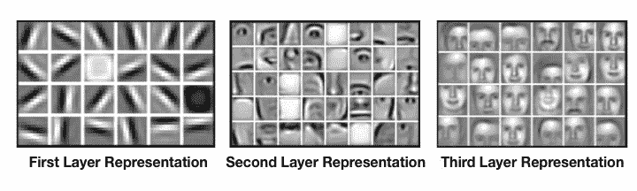
像FNN一样，CNN也有一个结构，当我们构建自己的应用程序时，它可以作为我们的指南。它通常如下所示:
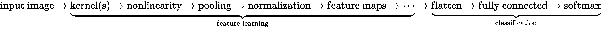
我们现在将分解最受欢迎的CNN架构之一，称为AlexNet，它在2012年的ILSVRC中表现优于所有其他模型，准确率提高了10%，并启动了深度学习革命。它是由Alex Krizhevsky、Ilya Sutskever和Geoffrey Hinton创作的。我们可以在下图中看到它的架构:
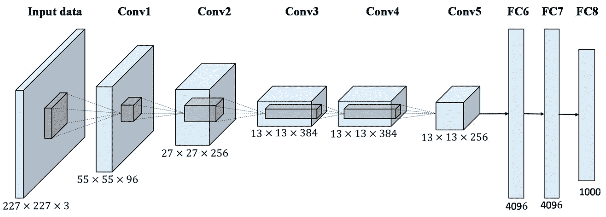
正如您所见，该架构包含八个可训练层，其中五个是卷积层，三个是全连接层。ImageNet数据集包含超过1500万个标记的图像，但是对于ILSVRC，我们在训练集中有大约120万个图像，在验证集中有50，000个图像，在测试集中有150，000个图像，并且图像所属的1，000个类中的每个类都有近1，000个图像。每张图像都被重新缩放到256 × 256 × 3，因为它们的大小都不同，从这些重新缩放的图像中，作者生成了大小为256 × 256 × 3的随机作物。此外，AlexNet的创建者使用ReLU激活而不是 tanh ，因为他们发现它在不牺牲准确性的情况下将训练速度提高了6倍。
应用于每层图像的操作及其大小如下:
- 卷积层1 : 96个大小为11 × 11 × 3的核，步长为4。这会产生一个大小为55 × 55 × 96的层。
- 非线性1 : ReLU激活应用于卷积层1的输出。
- 子采样层1 :最大池，大小为3 × 3，步距为2。这会产生一个大小为27 × 27 × 96的层。
- 卷积层2 : 256个核，大小为5 × 5，填充为2，步距为1。这会产生一个大小为27 × 27 × 256的层。
- 非线性2 : ReLU激活应用于卷积层2的输出。
- 子采样层2 :最大池，大小为3 × 3，步长为2。这会产生一个大小为13 × 13 × 256的层。
- 卷积层3 : 384个核，大小为3 × 3，填充为1，步距为1。这会产生一个大小为13 × 13 × 384的图层。
- 非线性3 : ReLU激活应用于卷积层3的输出。
- 卷积层4 : 384个大小为3 × 3的内核，填充为1，步长为1。这会产生一个大小为13 × 13 × 384的层。
- 非线性4 : ReLU激活应用于卷积层4的输出。
- 卷积层5 : 256个核，大小为3 × 3，填充为1，步距为1。这会产生一个大小为13 × 13 × 256的层。
- 非线性5 : ReLU激活应用于卷积层5的输出。
- 子采样层3 :最大池，大小为3 × 3，步距为2。这会产生一个大小为6 × 6 × 256的层。
- 全连接层1 :全连接层，有4096个神经元。
- 非线性6 : ReLU激活应用于全连接层1的输出。
- 全连接层2 :全连接层，有4096个神经元。
- 非线性7 : ReLU激活应用于全连接层2的输出。
- 全连接层3 :全连接层，有1000个神经元。
- 非线性8 : ReLU激活应用于全连接层3的输出。
- 输出层 : Softmax应用于1000个神经元，计算其成为类别之一的概率。
在构建架构时，了解模型中有多少参数是很重要的。我们用来计算每层参数数量的公式如下:
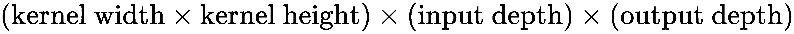
我们来计算一下AlexNet的参数。它们如下:
- 卷积层1:11×11×3×96 = 34848
- 卷积层2:5×5×96×256 = 614400
- 卷积层3:3×3×256×384 = 884736
- 卷积层4:3×3×384×384 = 1327104
- 卷积层5:3×3×384×256 = 884736
- 全连接第1层 : 256 x 6 x 6 x 4096 = 37，748，736
- 全连接第二层:4096 x 4096 = 16777216
- 全连通第三层:4096 x 1000 = 4096000
现在，如果我们将参数加在一起，我们发现AlexNet共有6230万个参数。这些参数中大约6%来自卷积层，其余94%来自完全连接的层。这应该让你知道为什么CNN如此有效，为什么我们如此喜欢它们。
你可能想知道我们为什么要用CNN，为什么不用FNN来代替。难道我们不能将图像展平到一个完全连接的图层中，并将每个像素输入到一个节点中吗？我们可以，但如果我们这样做了，那么我们的第一层将有154，587个神经元，我们的整个网络可能有超过100万个神经元和5亿个可训练参数。这是巨大的，我们的网络可能会因为没有足够的训练数据而不足。此外，FNN不具有CNN所具有的平移不变特性。
使用前面的参数，让我们看看是否可以将架构一般化，以便我们有一个框架来遵循我们想要构建的未来CNN，或者了解我们遇到的其他架构是如何工作的。在前面的架构中，您应该已经意识到的第一件事是，每个连续的特征地图的大小会随着其深度的增加而减小。此外，你可能已经注意到，深度总是被2整除，超过许多倍，通常，我们在层中使用32，64，128，256，512，等等。
就像我们之前看到的FNN一样，我们越深入，我们的精度就越好，但是这也有它自己的问题。较大的网络更难训练，并且可能对训练数据过拟合或欠拟合。这可能是太小、太大、训练数据太多或训练数据太少的综合结果。我们的CNN仍然没有固定的配方来决定到底要用多少层；在为各种任务构建和训练了几种架构之后，这在很大程度上取决于试错和建立一些直觉。
既然我们已经解决了这个问题，是时候开始真正有趣的事情了。我们如何训练这些奇妙的建筑？我们需要一个全新的算法来促进我们的训练和优化吗？不要！我们仍然可以使用反向传播和梯度下降来计算误差，将其相对于前面的层进行微分，并更新权重以使我们尽可能接近全局最优。
但是在我们进一步讨论之前，让我们先了解一下反向传播在CNN中是如何工作的，特别是对于内核。让我们重温一下本章前面的例子，我们将一个3 × 3的输入与一个2 × 2的内核进行卷积，结果如下:
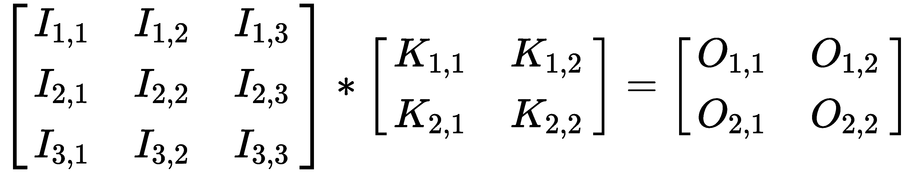
我们将输出矩阵中的每个元素表示如下:
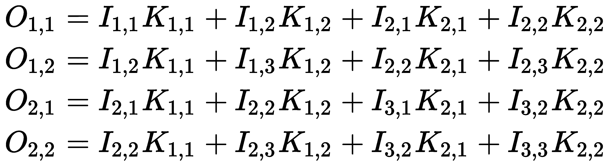
我们应该记得在第7章、前馈网络中，我们介绍了反向传播，我们对各层的权重和偏差进行损失(误差)求导，然后以此为指导更新参数，以减少我们网络的预测误差。然而，在CNN中，我们发现误差相对于核的梯度。因为我们的内核有四个元素，所以导数看起来如下:
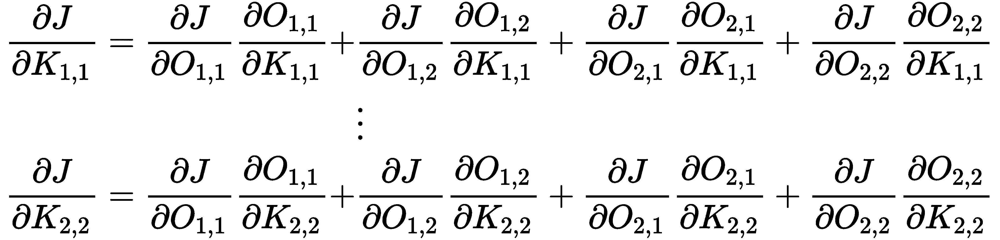
如果我们仔细观察这些代表来自前馈计算的输出的方程，我们可以看到，通过对每个核元素取偏导数，我们得到它所依赖的相应输入元素， I i，j 。如果我们将这个值代入导数，我们可以简化它们，得到如下结果:
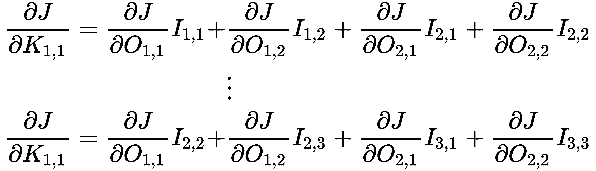
我们可以通过将它重写为卷积运算来进一步简化它。这看起来如下:
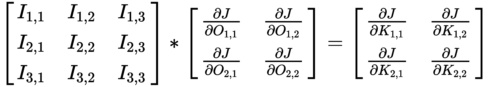
但是如果我们想找到关于输入的导数呢？我们的雅可比矩阵看起来肯定会有点不同。我们将有一个3 × 3矩阵，因为输入矩阵中有9个元素:
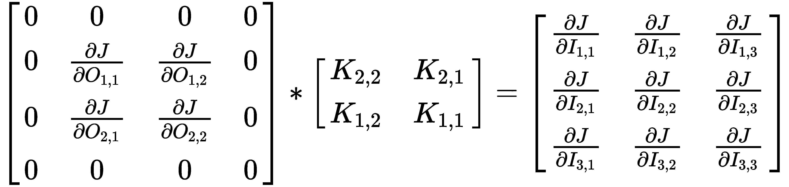
如果我们自己通过前面的等式手动推导，我们可以验证这一点，我鼓励你们尝试一下，以便很好地理解正在发生的事情及其原因。然而，现在让我们特别注意一下我们使用的内核。如果我们仔细看，它几乎看起来像行列式，但这不是它是什么。我们只是将内核旋转(即转置)了180°，这样我们就可以计算梯度了。
这是在CNN中反向传播如何工作的一个非常简化的视图；我们让它变得简单，因为其余的工作与FNNs中的完全一样。
现在我们知道了CNN是如何构建和训练的，是时候探索一些流行的架构并理解是什么让它们如此强大了。
VGG网络是AlexNet的衍生，由牛津大学视觉几何小组 ( VGG )的安德鲁·齐泽曼和卡伦·西蒙扬于2015年创建。这个架构比我们之前看到的要简单，但是它为我们提供了一个更好的框架。VGGNet也在ImageNet数据集上进行了训练，只是它将从数据集中重新缩放的图像中采样的大小为224 × 224 × 3的图像作为输入。你可能已经注意到，我们将这一部分命名为VGG-16——这是因为VGG网络有16层。这种体系结构有11层、13层和19层。
我们将首先探索网络的基本构建模块，称为VGG模块。这些块由两到三个卷积组成，后面是一个池层。整个网络的每个卷积层都使用大小为3 × 3、步长为1的核；然而，每个块中使用的内核的数量是相同的，但是可以因块而异。在子采样层，我们使用大小为2 × 2的池，填充大小相同，步长为2。
整个网络可以分解为以下操作:
- 卷积层1 : 64个核，大小为3 × 3，步距为1，填充相同。这会产生一个大小为224 × 224 × 64的层。
- 非线性1 : ReLU激活应用于卷积层1的输出。
- 卷积层2 : 64个核，大小为3 × 3，步长为1，填充相同。这会产生一个大小为224 × 224 × 64的层。
- 非线性2 : ReLU激活应用于卷积层2的输出。
- 子采样层1 :最大池，大小为2 × 2，步距为2。这会产生一个大小为112 × 112 × 64的层。
- 卷积层3 : 128个核，大小为3 × 3，步长为1，填充相同。这会产生一个大小为112 × 112 × 128的层。
- 非线性3 : ReLU激活应用于卷积层3的输出。
- 卷积层4 : 128个核，大小为3 × 3，步长为1，填充相同。这会产生一个大小为112 × 112 × 128的层。
- 非线性4 : ReLU激活应用于卷积层4的输出。
- 子采样层2 :最大池，大小为2 × 2，步长为2。这会产生一个大小为56 × 56 × 128的层。
- 卷积层5 : 256个核，大小为3 × 3，步长为1，填充相同。这会产生一个大小为56 × 56 × 256的图层。
- 非线性5 : ReLU激活应用于卷积层5的输出。
- 卷积层6 : 256个核，大小为3 × 3，步距为1，填充相同。这会产生一个大小为56 × 56 × 256的图层。
- 非线性6 : ReLU激活应用于卷积层6的输出。
- 卷积层7 : 256个核，大小为3 × 3，步距为1，填充相同。这会产生一个大小为56 × 56 × 256的图层。
- 非线性7 : ReLU激活应用于卷积层7的输出。
- 子采样层3 :最大池，大小为2 × 2，步距为2。这会产生一个大小为28 × 28 × 256的层。
- 卷积层8 : 512个核，大小为3 × 3，步长为1，填充相同。这会产生一个大小为28 × 28 × 512的层。
- 非线性8 : ReLU激活应用于卷积层8的输出。
- 卷积层9 : 512个核，大小为3 × 3，步距为1，填充相同。这会产生一个大小为28 × 28 × 512的层。
- 非线性9 : ReLU激活应用于卷积层9的输出。
- 卷积层10 : 512个核，大小为3 × 3，步长为1，填充相同。这会产生一个大小为28 × 28 × 512的层。
- 非线性10 : ReLU激活应用于卷积层10的输出。
- 子采样层4 :最大池，大小为2 × 2，步长为2。这会产生一个大小为14 × 14 × 512的图层。
- 卷积层11 : 512个核，大小为3×3，步长为1，填充相同。这会产生一个大小为14 × 14 × 512的图层。
- 非线性11 : ReLU激活应用于卷积层11的输出。
- 卷积层12 : 512个核，大小为3 × 3，步距为1，填充相同。这会产生一个大小为14 × 14 × 512的图层。
- 非线性12 : ReLU激活应用于卷积层12的输出。
- 卷积层13 : 512个核，大小为3 × 3，步长为1，填充相同。这会产生一个大小为14 × 14 × 512的图层。
- 非线性13 : ReLU激活应用于卷积层13的输出。
- 子采样层5 :最大池，大小为2 × 2，步长为2。这会产生一个大小为7 × 7 × 512的层。
- 全连接层1 :全连接层，有4096个神经元。
- 非线性14 : ReLU激活应用于全连接层1的输出。
- 全连接层2 :全连接层，有4096个神经元。
- 非线性15 : ReLU激活应用于全连接层2的输出。
- 输出层 : Softmax应用于1000个神经元，计算其成为其中一类的概率。
该网络在2014年ILSVRC中获得亚军，并具有大约1.38亿个可训练参数。所以，很难训练。
InceptionNet架构(通常被称为 GoogLeNet )在2014 ILSVRC中排名第一，并以93.3%的准确率实现了接近人类的性能。名称盗梦空间是对电影盗梦空间的引用，特别是对更深入的需求(就层次而言)。这个架构与我们之前看到的架构有一点不同，它使用了初始模块而不是层。每个初始模块包含三种不同大小的滤波器，分别为1 × 1、3 × 3和5 × 5。这使得我们的网络能够通过空间信息和不同尺度的差异来捕捉稀疏模式，从而使我们的网络能够学习更复杂的信息。然而，以前，我们的网络在整个层中始终有一个大小相同的内核。
初始模块看起来如下:
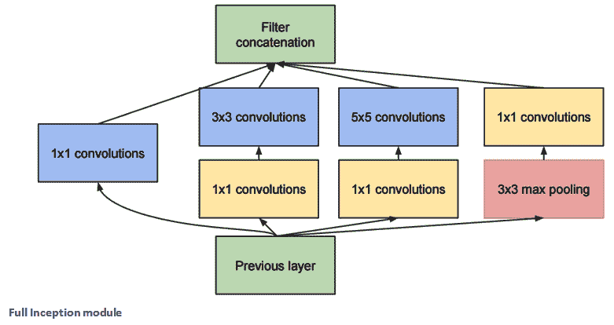
如您所见，每个模块包含四个并行通道。第一个通道包含1 × 1内核，第二个通道包含1 × 1内核，后跟3 × 3内核，第三个通道包含1 × 1内核，后跟5 × 5内核，第四个通道包含3 × 3最大池，后跟1 × 1内核。然后将得到的特征图连接起来，作为输入提供给下一个模块。在较大内核(如3 × 3和5 × 5内核)之前应用1 × 1内核的原因是为了降低维数，因为较大内核的计算成本更高。
该网络接收大小为224 × 224的图像，平均减法，以及22个具有可训练参数的层(如果算上池层，则为27层)。
下表显示了该体系结构的详细信息:
网络看起来如下:
有趣的是，尽管这是一个比AlexNet和VGG-16更深的网络，但我们需要训练的参数要少得多，因为它使用更小尺寸的内核，以及深度减少。正如我们所知，较大的网络往往比较浅的网络表现更好。这种架构的意义在于，尽管它很深，但如果它有更多的参数，那么训练起来相对更简单。
恭喜你！我们刚刚学习了一种强大的神经网络变体，称为CNN，它在与计算机视觉和时间序列预测相关的任务中非常有效。我们将在本书的后面重新讨论CNN，但同时，让我们继续下一章，学习循环和递归神经网络。